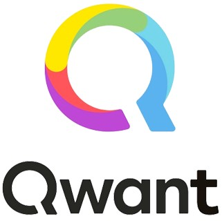

Qwanturank
Concours de SEO
Qu'est-ce que Qwant ?
Qwant est un moteur de recherche qui se distingue principalement sur sa volonté à respecter la vie privée des utilisateurs. Basé en France, et aussi déployé en Europe, il est le moteur de recherche le plus utilisé par l’État français. Il dispose d’une licence mais n’est pas disponible en Open source. Qwant est considéré comme la principale alternative aux moteurs de recherches les plus connus comme Google, une alternative présentée surtout comme respectueuse de la vie privée des utilisateurs.
La petite histoire de Qwant
Qwant a été fondé en 2011 par l’investisseur Jean-Manuel Rozan, l’ingénieur Éric Léandri ainsi que Patrick Constant. La signification de Qwant est lié à la première lettre du mot “Quantité” ainsi que le mot “want” qui veut dire “vouloir” en anglais. Le moteur de recherche a officiellement été déployé en 2013 et depuis 2018 devient le moteur de recherche par défaut sur tous les appareils du ministère français des Armées. La même année, Qwant, ou plutôt Qwant Junior, devient disponible en application sur iOS et Android. Comme l'a souligné Eric Léandri, ce moteur de recherche se distingue principalement pour le respect de la vie privée des internautes. Il se base sur les actualités pour afficher le plus de contenus pertiennts et ne dépose aucun cookie pour tracer le chemin des utilisateurs, si ce n'est l'activité de la session.
Alors que la guerres des étoiles a éclaté il y a bien longtemps et qu'elle est d'ailleurs toujours d'actualité pour déterminer quel pays est le plus influent dans l'espace, il n'en reste pas moins que sur terre et surtout sur le web, la guerre du référencement et de la protection de la vie privée est tout aussi primordiale. Ces questionnements sont au coeur des préoccupations des chefs d'État et des ministères, puisque Qwant est une porte d'entrée à un nouveau système de recherche indépendant et drastiquement différent du mastodonte Américain Google. Considéré comme étant le "Google français en marche", la banque européenne a investit 25 millions d'euros dans la société afin d'étendre son influence en Europe. En revanche, plusieurs critiques ont été faites au sujet du moteur de recherche et de son système de référencement en pointant du doigt des similitudes avec Bing.
Malgré des débuts difficiles, Qwant est, par la suite, rapidement devenu "la" référence en tant que moteur de recherche européen qui défend les droits privés des internautes. À partir de cet ecosystème, d'autres projets ont été mis à disposition comme Qwant Music, Qwant Maps, Qwant School ou encore Qwant Causes, tous destinés à des recherches spécifiques. Eric Léandri tient tout de même à préciser qu'il ne veut pas concurrencer Google et d'autres moteurs de recherche mais plutôt apporter quelque chose de différent.
La philosophie Qwant
Le moteur de recherche Qwant cherche surtout à développer et préserver une philosophie qui respecte les utilisateurs. En effet, la vie privée et la neutralité des données sont des éléments essentiels pour respecter les activités des utilisateurs sur Qwant. Il s'agit donc de respecter le web en comprenant les principes du référencement et ses fails. De cette façon, en étudiant différents cas, Qwanturank peut palier à certaines erreurs qui pourraient privilégier des sites web qui ne respectent pas les réels principes du SEO. Il va de soi qu'en plus du respect de la vie privée, la qualité des recherches soit également présente puisque Qwant délive les meilleurs résultats possibles à vos requêtes. Ça c'est une philosophie que l'on apprécie, une philosophie belle dans ce qu'elle défend mais pas uniquement, une philosophie qui suit concrètement ce qu'elle reflète.
On ne peut parler de ce que le moteur de recherche met en avant sans parler de son environnement et de son étendu. Et oui, nous le disons haut et fort, Qwant respecte les lois et les cultures européennes. Comme expliqué précédemment, le siège de Qwant est basé en France et les équipes mettent tout en oeuvre pour respecter ce pourquoi ils travaillent si durement, tout dans les règles de l'art. Aussi claire et limpide que de l'eau de roche, voici ce qu'est la philosophie de Qwant.
Mais alors comment réellement respecter la vie privée des utilisateurs ? Comment rester neutre dans cet environnement qui en veut savoir toujours plus sur le profil des personnes et ce qu'ils font sur le web ? Vous vous dites peut-être que cela est trop beau pour être vrai ? Eh bien non, c'est tout simplement Qwant. Puisque le moteur de recherche met en exergue le fait de ne jamais filtrer le contenu web des internautes et de ne pas les tracer, il fallait trouver une alternative aux autres moteurs de recherche, qui, quant à eux, ne protègent pas forcément comme il se doit vos données et privilégie un référencement pas toujours neutre. Quelle est donc la solution ? Le mode de financement de Qwant ne repose pas sur la publicité comme ses concurrents, mais plutôt sur les commissions proposés par les boutiques en ligne une fois que des internautes aient fait un achat depuis la rubrique shopping.
Cette volonté de transparence à tout prix mise en avant par Qwant et se différencier de ses concurrents est telle, que tout repose pratiquement sur cette philosophie si chère au moteur de recherche. Alors que dans certains pays, la surveillance de la population a été la source de nombreux scandales, les utilisateurs sont de plus en plus poussé vers des moteurs de recherche comme Qwant qui prône la neutralité et le respect des données.